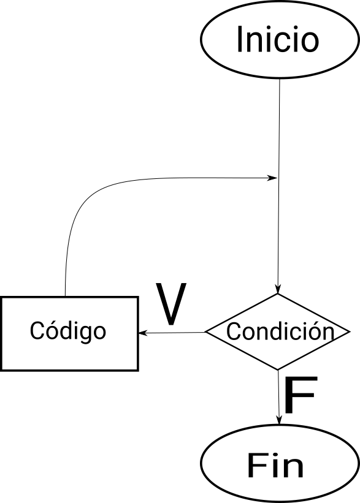
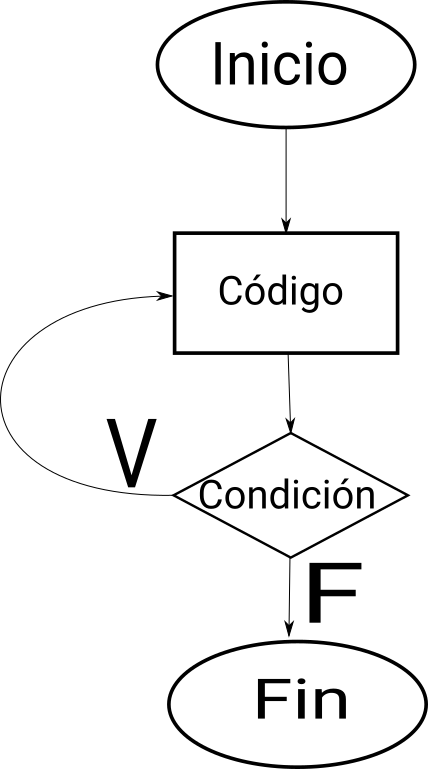

Referencia JAVA
Índice
Descargar archivo fuente .org
Descargar como PDF
Descargar como OpenDocument
1 Introducción
Java es un lenguage de programación orientado a objetos, fue desarrollado en 1995 por Sun MicroSystems y está basado en C++, es un lenguaje que se ejecuta en una máquina virtual que interpreta (la JVM, siglas de Java Virtual Machine) las instrucciones compiladas a bytecode (el lenguaje de la máquina virtual). Java fue adquirido por Oracle en el año 2010.
1.1 Estructura de un programa
A lo largo de este texto veremos varios ejemplos de código fuente Java así como su salida por pantalla, a continuación un ejemplo de código Java:
//Este fichero pertecene al paquete (carpeta) curso.java.manual (curso/java/manual) package curso.java.manual; //Esto es una importación de la clase Scanner del paquete java.io import java.io.Scanner; //Esto es una clase pública que se llama HolaMundo public class HolaMundo { /*Este es el método main (principal), es un método especial que servirá comom punto de entrada a la aplicación. Este método es: - público (puede ser accedido desde cualquier clase) - estático (puede ser accedido sin necesidad de crear un objeto de la clase - no devuelve nada (tipo void) - recibe como argumentos un array (matriz) de objetos de tipo String (cadena de texto) */ public static void main (String [] args) { //Este es un objeto de la clase Scanner que se llama scan //Este objeto se inicializa con la palabra reservada new y //recibe como argumento System.in (Entrada del sistema) Scanner scan = new Scanner(System.in); /* Esto es una llamada a un método, concretamente al método print(String) del atributo out de la clase System, este método imprime en la pantalla (consola de texto) el texto que se le pase como parámetro y continúa en la misma línea. Como parámetro se le pasa la cadena de texto (String) "¿Cómo te llamas?" Los valores de tipo String van siempre entre comillas dobles " */ System.out.print("¿Cómo te llamas?"); //Este es un objeto de la clase String (cadena de texto) que se llama nombre. //Este objeto se inicializa automáticamente con el valor que devuleve //el método readLine() (Método sin argumentos) del objeto scan. String nombre = scan.nextString(); /* Esto es otra llamada a un método, en este caso al println del atributo out de la clase System, nótese la diferencia con la llamada anterior (print -- println), ese ln añadido lo que hace es saltar de línea una vez haya impreso lo que le pasemos como parámetro. En este caso, como parámetro se le pasa una cadena de texto (igual que antes) con el valor "Hola, " a lo que le concatenamos (sumamos) el valor de la variable nombre */ System.out.println("Hola, "+nombre); } }
Y a continuación un ejemplo de como sería su salida por pantalla si le decimos que nos llamamos Víctor:
¿Cómo te llamas? Víctor Hola, Víctor
2 Tipos de datos
Los tipos de datos primitivos en java son los siguientes:
| tipo | descripción | clase asociada |
|---|---|---|
| byte | número entero de 8 bits (-128 a 127) | Byte |
| short | número entero de 16 bits (-32768 a 32767 | Short |
| int | número entero de 32 bits (\(-2^{32}\) a \(2^{32}\)) | Integer |
| long | número entero de 64 bits (\(-2^{64}\) a \(2^{64}\)) | Long |
| float | número decimal de 32 bits | Float |
| double | número decimal de 64 bits | Double |
| boolean | valor booleano o lógico (verdadero o falso) | Boolean |
| char | caracter de texto (único) | Character |
Los tipos de datos normalmente se usan en su forma primitiva (columna tipo) y se pueden asignar directamente, pero a veces es util usar métodos de su clase asociada.
3 Operadores
3.1 Asignación
El operador = se usa para asignar valores a variables:
int a = 0;
3.2 Aritméticos
En java se pueden realizar multitud de operaciones matemáticas con la misma precedencia que en la vida real, si se necesita modificar se pueden utilizar paréntesis, los operadores aritméticos son los siguientes:
| Operador | Descripción |
|---|---|
| + | Operador de suma |
| - | Operador de resta |
| * | Operador de multiplicación |
| / | Operador de división |
| % | Operador de resto de la división |
El siguiente código es una pequeña demostración de los operadores mencionados:
public class Aritmeticos { public static void main (String[] args) { // Variable de tipo int que tendrá como valor el resultado de 1 + 2 int resultado = 1 + 2; // El valor de resultado es 3 System.out.println("1 + 2 = " + resultado); int resultado_original = resultado; // Los operadores se pueden usar entre variables (numéricas) y números // en este caso se resta 1 al valor de resultado primero y se asigna a // la variable resultado después resultado = resultado - 1; // El valor de resultado es 2 System.out.println(resultado_original + " - 1 = " + resultado); resultado_original = resultado; // Multiplicamos el resultado por 2 y lo volvemos a asignar a la variable //resultado resultado = resultado * 2; // El valor de resultado es 4 System.out.println(resultado_original + " * 2 = " + resultado); resultado_original = resultado; // Dividimos el resultado entre 2 y lo asignamos resultado = resultado / 2; // El valor de resultado es 2 System.out.println(resultado_original + " / 2 = " + resultado); resultado_original = resultado; resultado = resultado + 8; // El valor de resultado es 10 System.out.println(resultado_original + " + 8 = " + resultado); resultado_original = resultado; // Dividimos el resultado entre 7 y nos quedamos con el resto, luego lo // asignamos resultado = resultado % 7; // El valor de resultado es 3 System.out.println(resultado_original + " % 7 = " + resultado); } }
1 + 2 = 3 3 - 1 = 2 2 * 2 = 4 4 / 2 = 2 2 + 8 = 10 10 % 7 = 3
Como vimos anteriormente, el operador suma + se puede utilizar también para concatenar texto:
class Concatenacion { public static void main(String[] args){ String firstString = "Esto es"; String secondString = " una cadena de texto concatenada."; String thirdString = firstString+secondString; System.out.println(thirdString); } }
Esto es una cadena de texto concatenada.
3.2.1 Casteo de valores
Muchas veces, cuando estamos haciendo una operación aritmética, el valor que necesitamos es más pequeño que los posibles valores que nos puede dar como resultado la operación, con esto no queremos decir que se produzca si, por ejemplo, sumamos dos números muy grandes (ya que en ese caso, lo que podría ocurrir sería que el valor máximo del tipo de dato se excediera y diéramos la vuelta, es decir, nos fuéramos a los números negativos, pero Java no se quejaría de esto), sino que si, por ejemplo, sumamos dos números de tipo long y queremos guardar su resultado en una variable de tipo int, aunque el valor de los números a sumar cupiera perfectamente en una variable de tipo int, Java no tiene forma de saber esto, y se quejará por ello, veamos un ejemplo:
class ValorMuyGrande { public static void main(String[] args) { long n1 = 2; long n2 = 3; int suma = n1 + n2; System.out.println(suma); } }
El resultado que nos daría el compilador sería el siguiente:
ValorMuyGrande.java:5: error: incompatible types: possible lossy conversion from long to int
int suma = n1 + n2;
^
1 error
Es decir, Java nos está indicando que queremos meter un valor potencialmente más grande que la variable que lo va a contener, se va a producir una pérdida en la conversión de long a int.
En los casos en los que sabemos que ese valor no excederá nuestra variable, tenemos la opción de castear (digamos, prometer a Java algo) que la suma devolverá un determinado tipo, esto se hace poniendo entre paréntesis el tipo de dato que devolverá una determinada función, veamos el ejemplo:
class ValorCasteado { public static void main(String[] args) { long n1 = 2; long n2 = 3; int suma = (int) (n1 + n2); System.out.println(suma); } }
5
3.2.2 Operadores unarios
En java hay un tipo de operadores aritméticos que sólo se utilizan en un operando, son los operadores unarios:
| Operador | Descripción |
|---|---|
| + | Indica un valor positivo |
| - | Indica un valor negativo |
| ++ | Incrementa en 1 el valor |
| -- | Decrementa en 1 el valor |
| ! | Invierte el valor de un booleano |
class Unarios { public static void main(String[] args) { int resultado = +1; // El resultado es 1 System.out.println(resultado); resultado--; // El resultado es 0 System.out.println(resultado); resultado++; // El resultado es 1 System.out.println(resultado); resultado = -resultado; // El resultado es -1 System.out.println(resultado); boolean exito = false; // false System.out.println(exito); // true System.out.println(!exito); } }
1 0 1 -1 false true
Los operadores de incremento y decremento (++ y --) actuan de manera diferente dependiendo de si se ponen delante o detrás del valor a modificar, si se usan de manera prefija ++variable el valor se incrementa primero y la variable se usa después (ya incrementada), si se usa de manera postfija variable++ se utilizará el valor de la variable sin incrementar y luego se incrementará:
class PrePost { public static void main(String[] args){ int i = 3; i++; // imprime 4 System.out.println(i); ++i; // imprime 5 System.out.println(i); // imprime 6 System.out.println(++i); // imprime 6 System.out.println(i++); // imprime 7 System.out.println(i); } }
4 5 6 6 7
3.3 Lógicos
Son operadores que devuelven valores lógicos (verdadero o falso)
| Operador | Descripción |
|---|---|
| == | igual que |
| != | distinto que |
| > | mayor que |
| >= | mayor o igual que |
| < | menor que |
| <= | menor o igual que |
| && | Y lógico |
| || | Ó lógico |
| instanceof | Objeto pertenece a clase |
Normalmente estos operadores se utilizarán en sentencias que requieran un valor lógico, como los condicionales o los bucles, de los que hablaremos más adelante, en este ejemplo vemos como, en base a los valores 1 y 2, que operaciones se ejecutan y cuales no:
class Comparacion { public static void main(String[] args){ int valor1 = 1; int valor2 = 2; System.out.println ("valor1="+valor1+", valor2="+valor2); if(valor1 == valor2) { System.out.println("valor1 == valor2 --> " + (valor1 == valor2)); } if (valor1 != valor2) { System.out.println("valor1 != valor2 --> " + (valor1 != valor2)); } if (valor1 > valor2) { System.out.println("valor1 > valor2 --> " + (valor1 > valor2)); } if (valor1 < valor2) { System.out.println("valor1 < valor2 --> " + (valor1 < valor2)); } if (valor1 <= valor2) { System.out.println("valor1 <= valor2 --> " + (valor1 <= valor2)); } } }
valor1=1, valor2=2 valor1 != valor2 --> true valor1 < valor2 --> true valor1 <= valor2 --> true
A veces es interesante comprobar si una comprobación cumple mas de una condición o si una sentencia se ejecutará si se cumple alguna de las condiciones posibles, es en este caso que utilizaremos los operadores lógicos && y ||.
class Condicionales { public static void main(String[] args){ int valor1 = 1; int valor2 = 2; if((valor1 == 1) && (valor2 == 2)) System.out.println("valor1 es 1 AND (Y) valor2 es 2"); if((valor1 == 1) || (valor2 == 1)) System.out.println("valor1 es 1 OR (O) valor2 es 1"); } }
valor1 es 1 AND (Y) valor2 es 2 valor1 es 1 OR (O) valor2 es 1
4 Condicionales
En java tenemos principalmente dos estructuras condicionales, la primera es la que se compone con las sentencias if y else, y la segunda es la sentencia switch.
4.1 if y else
La sentencia if se escribe de la siguiente manera:
if (condicion) {
proceso;
}
Donde condicion es un valor booleano (lógico), que puede ser una variable de tipo boolean, un valor true o false directamente, aunque no tuviera mucho sentido en este caso, o el resultado de una comparación como las que acabamos de ver.
Si la condición se cumple el proceso (que puede ser un número indeterminado de sentencias) se ejecuta, si no se cumple, no se ejecuta, decimos que se produce un salto condicional.
Hay veces que queremos que si se cumple una condición se ejecute un determinado código y, si no se cumple, otro, esto lo conseguimos con la sentencia else que tiene una forma parecida al if, pero en este caso no se especifica condición, sino que la condición es que no se cumpla el if.
if (condicion) { proceso; } else { otroProceso; }
Puede suceder que queramos comprobar una cosa y luego, independientemente otra, en ese caso solo tendríamos que tener un if primero y, una vez cerrado, otro con otra condición, en ese caso serían sentencias independientes y no habría ningún problema, pero podemos querer comprobar algo y, si se cumple, otra cosa después, esto lo hacemos anidando sentencias if o else:
if (condicion1) { proceso1; if (condicion2) { proceso2; } proceso3; } else { if (condicion3) { proceso4; } }
Si nos fijamos en el else (aunque esto puede ocurrir en cualquier otra parte, incluido el bloque del if), podemos observar que, en caso de no cumplirse la condicion1, podemos tener dentro otra estructura completa de sentencias if y cada una puede tener sus respectivos else y así indefinidamente, una manera de organizar mejor esté código es utilizando la sentencia compuesta else if que nos permite hacer varias comprobaciones sin aumentar el nivel de anidación, por ejemplo:
class Elseif { public static void main (String [] args) { int val = 10; if (val == 0) { System.out.println("val = 0"); } else if (val == 1) { System.out.println("val = 1"); } else if (val == 2) { System.out.println("val = 2"); } else if (val == 3) { System.out.println("val = 3"); } else if (val == 4) { System.out.println("val = 4"); } else if (val == 5) { System.out.println("val = 5"); } else { System.out.println("val > 5"); } } }
val > 5
En este caso como el valor de la variable val es 10, pasaría por cada una de las condicione y, al no cumplirse, entraría por la sentencia else si hiciéramos esto anidando sentencias if y else el código se iría muy a la derecha y sería más dificil de leer, pero aún tenemos otra sentencia que nos permite resolver estos problemas de una manera más elegante, la sentencia switch.
4.2 switch
El ejemplo anterior, escrito con una sentencia switch sería el siguiente:
class Switch { public static void main (String [] args) { int val = 10; switch(val) { case 0: System.out.println("val = 0"); break; case 1: System.out.println("val = 1"); break; case 2: System.out.println("val = 2"); break; case 3: System.out.println("val = 3"); break; case 4: System.out.println("val = 4"); break; case 5: System.out.println("val = 5"); break; default: System.out.println("val > 5"); } } }
val > 5
Como se puede observar, el código es mucho más claro, tenemos una sola sentencia condicional, switch, y esta, en base al valor que tenga la variable, entrará por un case o por otro y, en caso de que no coincida con ninguno, entrará por el default. Si, por ejemplo, cambiásemos el valor de val a 3, la salida que nos mostraría el programa sería la siguiente:
val = 3
Podemos observar también una sentencia que no habíamos visto antes, la sentencia break, esta sentencia rompe la ejecución del bloque en el que se encuentra, sería como ir a la llave de cierre, normalmente está desaconsejado su uso, pero en la sentencia switch es necesaria para cortar la ejecución donde nos interese, ya que, a diferencia de con las estructuras if-else, que están englobadas con llaves que nos hacen de corte, los case y default son etiquetas, y no delimitan código, lo marcan. Veamos que pasa si no ponemos la sentencia break en un switch.
class Switch2 { public static void main (String [] args) { int val = 2; //Inicializamos un contador para saber por cuantos cases pasamos; int contador = 0; switch(val) { case 0: contador++; case 1: contador++; case 2: contador++; case 3: contador++; case 4: contador++; case 5: contador++; case 6: contador++; case 7: contador++; case 8: contador++; case 9: contador++; case 10: contador++; System.out.println("He pasado por "+contador+" cases. El número es menor o igual que 10"); } } }
He pasado por 9 cases. El número es menor o igual que 10
¿Qué ha pasado? El programa ha ejecutado todos los cases uno detrás de otro, ya que ninguno tenía una sentencia break para parar la ejecución y ha llegado hasta el último, donde ha imprimido el mensaje. Este ejemplo nos sirve también para ver que la etiqueta default no es imprescindible, como en la instrucción if no es imprescindible el else, simplemente, si no se cumple ninguna de las condiciones contempladas, no se hará nada.
4.3 Condicional ternario
Por último nos queda un último tipo de condicional, llamado ternario o de asignación, esta estructura nos permite asignar un valor a una variable en base al valor de otra y se escribe de la siguiente forma:
String miString = (condicion)?"condicion es verdadera":"condicion es falsa";
Analizando por partes tenemos, a la izquierda del igual, una declaración de variable de tipo String como las que hemos visto hasta ahora, a la derecha tenemos, primero una condición lógica (del mismo tipo que las que se usan en las sentencias if, luego un signo de interrogación ? que es el que nos indica que ese valor lógico no es para asignar a la variable, como hemos visto cuando asignábamos variables de tipo boolean, sino que es la condición para asignar la variable, el siguiente valor "condicion es verdadera" es el valor que tomará la variable miString si (condicion) es verdadera. Luego encontramos un signo de dos puntos : que separa las condiciones verdadera y falsa y, por último "condicion el falsa" que, como se puede intuir, es el valor que tomará miString si (condicion) es falsa.
Este condicional puede ser escrito con sentencias if-else de la siguiente manera (el resultado del código será el mismo):
String miString; if (condicion) { miString = "condicion es verdadera"; } else { miString = "condicion es falsa"; }
La decisión de usar una u otra dependerá de si se prefiere legibilidad del código (ternaria) o comprensión más visual (if-else).
5 Bucles
La ejecució normal de un programa en java (y en casi cualquier lenguaje de programación) se hace de arriba a abajo desde que empieza hasta que termina, los bucles son estructuras de control que permiten que una parte del código se ejecute más de una vez en base a una condición.
5.1 El bucle while
El tipo de bucle más simple que nos encontramos es el bucle while, este bucle se va a ejecutar mientras (while) la condición se cumpla y, una vez esta deje de cumplirse, seguirá desde el final del mismo.
Es importante que la condición deje de cumplirse en algún momento, y esto es válido para cualquier tipo de bucle, si la condición siempre se cumple decimos que tenemos un bucle infinito, el cual hará que nuestro programa se bloquee.
La estructura de un bucle while es la siguiente:

Figura 1: Diagrama de un bucle while
Por ejemplo, si queremos un programa que muestre por pantalla los números del 1 al 10, podemos hacer lo siguiente:
class BucleWhile { public static void main(String[] args) { //Ponemos el número con el valor que queremos al principio int numeroActual=1; //Bucle while //Condición: que numeroActual sea menor o igual que 10 while (numeroActual<=10) { //Imprimimos por pantalla el número con su valor en este momento System.out.println(numeroActual); //Aumentamos el valor del número //Si no lo hacemos, el valor de númeroActual siempre será menor o igual a 10 y tendremos un bucle infinito numeroActual++; } } }
5.2 El bucle for
El bucle for es un caso especial del bucle while, este bucle se va a ejecutar igualmente mientras se cumpla la condición dada, por lo que su diagrama es el mismo, pero nos permite simplificar la programación metiendo en la cabecera tanto la inicialización de la variable como su modificación, por ejemplo, si como en el caso anterior queremos escribir los números del 1 al 10 con un bucle for lo haríamos así:
class BucleFor { public static void main (String[] args) { for (int numeroActual=1; numeroActual<=10; numeroActual++) { System.out.println(numeroActual); } } }
Como podemos ver, el resultado de este programa será exáctamente el mismo que el anterior:
1 2 3 4 5 6 7 8 9 10
La decisión de utiliar un tipo de bucle u otro depende del programador, pero se suele utiliar el bucle for para situaciones en las que haya que contar, como en el caso que hemos puesto porque nos permite crear y deshechar la variable en la propia cabecera sin tener que llevar datos innecesarios, aunque por supuesto podemos usar una variable que tengamos de antes como en el bucle while e, incluso, no modificar la variable en la cabecera y hacerlo en el cuerpo.
class BucleForSinInicializacion { public static void main (String[] args) { int numeroActual=1; for (; numeroActual<=10; numeroActual++) { System.out.println(numeroActual); } } }
class BucleForSinModificacion { public static void main (String[] args) { for (int numeroActual=1; numeroActual<=10;) { System.out.println(numeroActual); numeroActual++; } } }
Y, por supuesto, si sacamos de la cabecera tanto la inicialización como la modificación de la variable, lo que tenemos es un bucle while con otro nombre:
class BucleForSinInicializacionNiModificacion { public static void main (String[] args) { int numeroActual=1; for (; numeroActual<=10;) { System.out.println(numeroActual); numeroActual++; } } }
5.3 El bucle do-while
Hasta ahora hemos visto bucles que se ejecutan sólo si se cumple una determinada condición, pero ¿y si queremos que un fragmento de código se ejecute como mínimo una vez pero si se cumple la condición se ejecute unas cuantas mas? Podríamos duplicar el mismo código, una vez fuera del bucle y otra vez dentro, pero para ahorrarnos la reduncancia tenemos el bucle do-while.
Este bucle se trata de un bucle while en el que la condición para volverlo a ejecutar se encuentra al final y no al principio, fijémonos en el siguiente diagrama:

Figura 2: Diagrama de un bucle do-while
Podemos continuar con nuestro ejemplo de contar de 1 a 10, veamos como se haría con un bucle do-while:
class DoWhile { public static void main(String[] args) { //Inicializamos la variable fuera del bucle int numeroActual=1; do { //Imprimimos su valor System.out.println(numeroActual); //Aumentamos la variable numeroActual++; //Comprobamos la condición, como ya se ejecuta una vez como mínimo //es necesario poner menor (<) y no menor o igual (<=), si lo hiciéramos //cuando el valor de numeroActual fuera 10 cumpliría y volvería a ejecutar //el código, por lo tanto contaría hasta 11 } while (numeroActual < 10); } }
1 2 3 4 5 6 7 8 9 10
6 Manejo de Excepciones
7 Métodos y funciones
Con lo que ya sabemos podemos crear programas muy potentes, podemos controlar si un bloque de código se ejecutará o no y cuantas veces lo hará, pero la ejecución sigue siendo de arriba a abajo, estamos en lo que se conoce como programación estructurada, pero vayamos más allá, hasta ahora, si queríamos ejecutar un bloque de código más de una vez podíamos hacer bucles, pero estos siempre se ejecutarán con los mismos datos, con los métodos podemos ejecutar el mismo código pero con parámetros diferentes, veamos un ejemplo sencillo:
class MiPrimerMetodo { //Aquí tenemos el método main, no devuelve nada (void) //y recibe como parámetro un array de Strings (varias cadenas de texto) public static void main(String [] args) { //Creamos una variable llamada nombre y la inicializamos String nombre = "Bimo"; //Llamamos a nuestro método y le pasamos como parámetro la variable saludar(nombre); //Cambiamos el valor de la variable nombre = "Kirby"; //Y volvemos a llamar al método saludar(kirby); } //Aquí tenemos nuestro método, se llama saludar y no devuelve nada, //recibe como parámetro una cadena de texto llamada nombre, //cada vez que se ejecute saludará a quien venga escrito en la variable nombre static void saludar(String nombre) { System.out.println("Hola, "+nombre); } }
Hola, Bimo Hola, Kirby
7.1 Paso de parámetros
En el ejemplo anterior hemos visto que al método saludar le pasábamos un parámetro, un nombre en este caso, de tipo String, cuando declaramos un método, dentro de los paréntesis le podemos poner, separados por comas, todos los parámetros que vaya a necesitar para cumplir su función, estos parámetros se escriben de la misma manera que se creaban las variables (pero sin inicializar), y cuando se les invoca se le pasan las variables necesarias que se correspondan con los parámetros que requiere, veamos un ejemplo:
//Supongamos que llegamos a este método, //como se ve, no tiene parámetros ni devuleve nada (void) public void metodo1() { System.out.println("El número es: "+metodo2()); } //Este método es privado, sólo se puede invocar desde //esta clase, y devuelve un número entero, //tampoco recibe parámetros private int metodo2() { int numero = metodo3(2); return numero; } //Este es otro método privado, que recibe como //parámetro un número entero y llama al metodo4 private int metodo3(int numero) { return metodo4(numero, 0.5); } //Este método recibe como parámetros un número entero //y un número decimal y los multiplica, después devuleve //el resultado entero. private int metodo4(int numero, double factor) { return (Integer)(numero * factor); }
En Java, se dice que los parámetros que se pasan a los métodos se hacen por valor, esto quiere decir que cada método hace una copia del parámetro cuando se invoca y, se asignamos un nuevo valor al parámetro dentro del método, este no cambiará en el método que lo invocó, veamos un ejemplo:
class PasoDeValor { //Declaramos un método al que llamaremos, //Como podemos ver, podemos declararlo antes //del método main, aunque se le llamará después static void cambiarValor(int numero) { numero = 2; } public static void main (String [] args) { //Declaramos una variable y le asignamos un valor int numero = 1; //Llamamos al métod de cambio de valor cambiarValor(numero); //Mostramos el resultado por pantalla System.out.println(numero); } }
1
Se puede pensar que el que los valores no pasen de los métodos a quien los llamó es poco util, pero si puede hacerse, para ello usaremos la sentencia return, que literalmente devuelve el valor que le digamos, si modificamos un poco el programa anterior lo veremos:
class RetornoDeValor { //Declaramos un método al que llamaremos, //Como podemos ver, podemos declararlo antes //del método main, aunque se le llamará después. //En este caso hemos cambiado el tipo de retorno del método // de void (no devuleve nada) a int, y hemos añadido la sentencia // return con nuestra variable. static int cambiarValor(int numero) { numero = 2; return numero; } public static void main (String [] args) { //Declaramos una variable y le asignamos un valor int numero = 1; //Llamamos al métod de cambio de valor //y le asignamos el valor del retorno numero = cambiarValor(numero); //Mostramos el resultado por pantalla System.out.println(numero); } }
2
Ahora, para ver otra característica del paso de parámetros a los métodos, tenemos que hacerlo mediante objetos, de momento no nos preocupemos mucho de ello, básicamente lo que tenemos que tener en cuenta es que si pasamos un objeto como parámetro y cambiamos el valor de una de sus propiedades dentro de un método, esta permanecerá cambiada incluso fuera del método, esto puede parecer lo opuesto a lo que acabamos de ver, pero no es así, si en lugar de cambiar el valor de una de las propiedades del objeto lo que hiciéramos fuera instanciar un nuevo objeto en la variable (como asignar un nuevo valor en las variables que ya conocemos), el valor de la variable original permanecería intacto, veamoslo de nuevo con dos ejemplos:
import java.util.ArrayList; class CambioDeObjeto { public static void main (String [] args) { /* Creamos un objeto de tipo ArrayList, este objeto consiste un una lista del tipo de objetos que le digamos entre los acentos, en este caso Integer (número entero), se declara como ya sabemos TipoDeObjeto nombreDeLaVariable, y luego se le asigna un valor, en este caso, un objeto nuevo de la clase ArrayList, los paréntesis que aparecen al final son porque estamos llamando al método constructor del objeto, sin parámetros en este caso, aunque puede haberlos. */ ArrayList<Integer> lista = new ArrayList<Integer>(); /* Añadimos un objeto de la clase Integer (un 1), en el objeto lista, para ello llamamos al método add de la clase ArrayList, con un parámetro de tipo entero (el 1), este método añade un objeto a la lista. */ lista.add(1); //Imprimimos el valor del primer elemento de la lista (posición 0), llamando al método get de la clase ArrayList System.out.println(lista.get(0)); } /* Se asigna un nuevo valor a la variable lista */ static void nuevoObjeto(ArrayList<Integer> lista) { lista = new ArrayList<Integer>(); lista.add(2); } }
1
Ahora vamos a ver como podemos añadir un valor al objeto que ya existe
import java.util.ArrayList; class CambioDePropiedad { public static void main (String [] args) { /* Creamos un objeto de tipo ArrayList, este objeto consiste un una lista del tipo de objetos que le digamos entre los acentos, en este caso Integer (número entero), se declara como ya sabemos TipoDeObjeto nombreDeLaVariable, y luego se le asigna un valor, en este caso, un objeto nuevo de la clase ArrayList, los paréntesis que aparecen al final son porque estamos llamando al método constructor del objeto, sin parámetros en este caso, aunque puede haberlos. */ ArrayList<Integer> lista = new ArrayList<Integer>(); //Llamamos al método para asignar un nuevo valor a la propiedad anadirValor(lista); /* Añadimos un objeto de la clase Integer (un 1), en el objeto lista, para ello llamamos al método add de la clase ArrayList, con un parámetro de tipo entero (el 1), este método añade un objeto a la lista. En este caso, se añadirá en la posición 1 (la segunda). */ lista.add(1); //Imprimimos el valor del primer elemento de la lista (posición 0), llamando al método get de la clase ArrayList System.out.println(lista.get(0)); } /* Se asigna un nuevo valor a la variable lista */ static void anadirValor(ArrayList<Integer> lista) { lista.add(2); } }
2
8 Clases y objetos
Como ya hemos comentado anteriormente, Java es un lenguaje de programación orientado a objetos, en Java, prácticamente todo es un objeto, salvo los tipos de datos primitivos (int, char, boolean,…) que incluso también tienen una clase asociada (Integer, Character y Boolean, respectivamente para los ejemplos anteriores, nótese que empiezan por mayúscula), aunque probablemente, la clase con la que estarás más familiarizada será la clase String, usada para cadenas de texto.
Muchas veces se usan indistintamente los términos clase y objeto, lo correcto es llamar clase al archivo fuente .java y objeto a las instancias de este.
8.1 El método constructor
En Java (y en cualquier otro lenguaje de programación orientado a objetos), llamamos instanciar al hecho de crear un objeto de una determinada clase en nuestro código, para ello hacemos uso de un tipo de método especial llamado constructor.
Este método es especial por varios motivos:
- Es un método sin nombre, su nombre es el nombre de la propia clase
- Es necesario invocarlo unido a la palabra reservada new
Esto lo hemos visto anteriormente en el ejemplo de paso de variables por valor a los métodos de la siguiente manera:
ArrayList<Integer> lista = new ArrayList<Integer>();
Analizando la sentencia anterior tenemos lo siguiente:
- ArrayList<Integer>: El tipo de objeto que vamos a crear, exáctamente igual que cuando creábamos variables de tipo int, char, boolean, String,…. En este caso, un objeto ArrayList (Un tipo de lista) de objetos de tipo Integer (o int, números enteros)
- lista: El nombre de la variable, nada nuevo aquí.
- new ArrayList<Integer>(): y aquí tenemos la llamada al método constructor, como podemos ver, es un método que se llama igual que la clase que queremos instanciar (ArrayList<Integer>) y que va seguido por unos paréntesis, en este caso, sin nada dentro porque no le pasamos ningún parámetro, todo ello precedido de la palabra reservada new, que es la que le indica a Java que lo que venga detrás será un método constructor.
En Java, por convención, las clases empiezan con mayúscula, meintras que los nombres de las variables y los métodos se escriben empezando con minúscula, en ambos casos siguiendo la convención CamelCase (UpperCamelCase, comenzando con mayúscula para las clases y lowerCamelCase, comenzando con minúscula para lo demás), que consiste en, si necesitamos varias palabras en el nombre, separarlas con mayúsculas y sólo usarlas en ese caso o en caso de abreviaturas conocidas, por ejemplo, podríamos tener un método que se llamase getSQL, ya que SQL es una abreviatura bien conocida.
8.2 El caso de la clase String
Anteriormente hemos instanciado una clase que es un caso especial, no lo hemos hecho mediante un método constructor, sino asignándole un valor con = como hacíamos con los tipos primitivos, se trata de la clase String.
Esta clase, por ser tan extendida se crea de esta manera, que nos puede dar la impresión de que se trata de un tipo de variable primitivo:
String nombre = "Kirby";
Pero en realidad lo que estábamos haciendo era crear una nueva instancia (un nuevo objeto) de la clase String.
La clase String, como cualquier otra clase en Java necesariamente debe tener al menos un método constructor, y así es, es sólo que Java nos ofrece esta conveniencia.
8.3 El valor null
Hasta ahora, cuando creábamos una variable esta podía estar inicializada o no, y, si lo estaba, tenía un valor válido dentro de su tipo, el valor null es un valor especial, nos permite indicar que el contenido de una variable de tipo objeto es nulo, es decir, no contiene nada pero existe como variable, el valor null es el mismo para cualquier tipo de objeto, se puede asignar a cualquier objeto con el operador de asignación (=) y puede ser usado en operaciones de comparación, vamos a ver un ejemplo:
class ValorNull { public static void main(String [] args) { //Asignamos el valor null a una objeto instancia de la clase String String nombre = null; //Comprobamos si la variable nombre es nula (valor null) if (nombre == null) { nombre = "Kirby"; } System.out.println(nombre); } }
Kirby
8.4 Clases más conocidas
8.4.1 String
Como acabamos de ver, la clase String probablemente sea la clase más conocida de Java, empezamos a trabajar con ella prácticamente en el primer programa HolaMundo que hacemos y la utilizamos tanto como a los tipos primitivos, sirve para guardar cadenas de texto y no nos detendremos mucho más en ella.
8.4.2 Clases asociadas a tipos primitivos
Como ya vimos en la sección Tipos de datos, los tipos primitivos tienen una clase asociada a cada uno de ellos, el nombre del tipo de dato es normalmente una abreviatura del nombre completo de la clase y se escribe en minúscula, mientras que la clase, como hemos visto antes, se escribirá en mayúscula. Estas clases son especialmente útiles, ya que, además de contener una serie de métodos que nos ofrecen funciones para trabajar con estos tipos de datos, pueden ser usados para almacenar el valor null en ellos, indicando así que un dato que normalmente tendría un valor por defecto, no contiene nada.